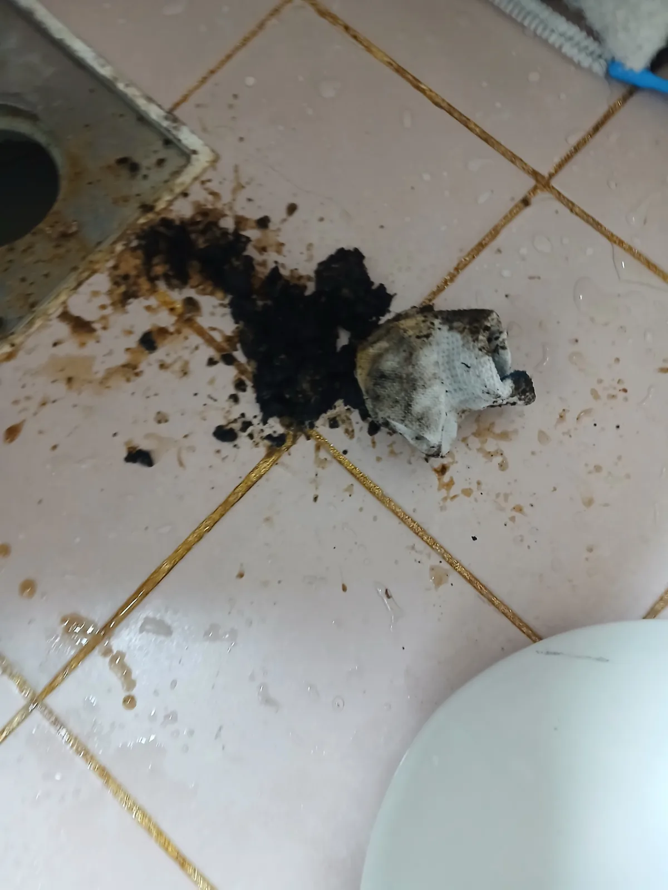

시흥시 하중동 변기막힘, 현장 도착 후 진단
시흥시 하중동에서 변기가 제대로 내려가지 않는다는 요청을 받고 변기막힘 작업에 필요한 전문 장비를 준비해 신속하게 현장으로 이동했습니다.
변기막힘은 휴지나 생활 이물질이 변기 자체의 트랩에 걸려 발생하기도 하지만, 변기보다 아래쪽에 연결된 오수관의 배수 흐름이 막혀 비슷한 증상이 나타나는 경우도 있습니다.
따라서 반복적인 관통만으로 해결되지 않거나 막힘 상태가 심한 현장은 어디에서 문제가 발생했는지 구분해 필요한 작업을 선택하는 것이 중요합니다.
이번 시흥시 하중동 현장은 변기를 탈거해 하부 오수관까지 확인했습니다. 실제 오수관 내부에는 검은색 오염물과 이물질이 상당량 확인됐으며 변기만 간단하게 관통하고 끝낼 상황이 아니었습니다.
신라건축설비는 변기막힘·싱크대막힘·하수구막힘을 전문적으로 처리하며 겉으로 나타나는 증상만 보고 동일한 작업을 반복하지 않습니다. 현장 상태와 배관 구조를 확인하고 필요한 장비와 작업 범위를 판단해 단순 통수에 그치지 않고 실제 문제가 발생한 배관 구간까지 확인해 작업하는 것을 중요하게 생각합니다.
1단계: 증상 확인과 필요한 장비 작업
변기를 안전하게 탈거한 뒤 하부 오수관으로 직접 접근해 전문 관통 장비를 투입했습니다.
오수관 내부의 막힘 구간을 작업하면서 배수 흐름을 확보하고 내부에 쌓여 있던 오염물과 이물질을 제거했습니다. 작업 과정에서는 실제로 검은색 오염물이 다량 배출되는 것을 확인할 수 있었습니다.
변기 물이 다시 내려간다고 해서 바로 작업을 끝내면 배관 내부에 남아 있는 오염물로 인해 배수 상태가 다시 나빠질 수 있습니다. 이번 현장에서는 단순 통수에 그치지 않고 오수관 내부 상태를 고려해 추가적인 배관 작업을 진행했습니다.

2단계: 원인 구간 처리와 정상 작동 확인
리지드 플렉스샤프트를 비롯한 전문 장비를 활용해 오수관 내부에 남아 있던 오염물과 이물질을 추가로 제거했습니다.
변기막힘이라고 해서 모든 현장에 같은 장비와 공법을 적용하는 것은 아닙니다. 단순 이물질 막힘은 비교적 간단한 작업으로 해결할 수 있지만, 이번 하중동 현장처럼 변기 하부 오수관까지 문제가 이어진 경우에는 변기 탈거와 오수관 작업, 샤프트 등 현장 상태에 맞는 복합적인 대응이 필요할 수 있습니다.
필요한 작업을 마친 뒤에는 변기를 다시 설치하고 실제 물을 내려보내 배수 상태를 확인했습니다. 장비가 배관을 통과했다는 것만으로 판단하지 않고 실제 사용 상태에서 변기가 정상적으로 배수되는지 확인하며 작업을 마무리했습니다.

작업 결과와 재발 방지 안내
변기 하부 오수관에서 배수 흐름을 방해하던 다량의 오염물과 이물질을 제거하고 변기의 정상적인 배수 상태를 확보했습니다.
작업 후에는 실제 배수 상태를 다시 확인하고 진행한 작업 내용과 결과를 설명했습니다. 신라건축설비는 막힘만 뚫고 현장을 끝내기보다 고객이 어떤 문제가 있었고 어떤 작업으로 해결됐는지 이해할 수 있도록 설명하고 최종 결과까지 확인하는 것을 중요하게 생각합니다. 정확한 진단과 충분한 설명, 확실한 마무리를 통해 고객이 작업 결과에 만족할 수 있는 현장을 만드는 것이 신라건축설비의 기본 원칙입니다.
신라건축설비는 서울·경기 전 지역에서 변기막힘·싱크대막힘·하수구막힘을 전문적으로 해결하고 있습니다. 특히 이번 시흥시 하중동 현장처럼 단순한 변기 관통으로 끝나지 않는 경우에도 변기 탈거부터 오수관 관통, 리지드 샤프트 작업까지 현장 상황에 맞춰 대응합니다.
생활 배관의 간단한 막힘부터 배관 내시경검사, 석션, 관통, 샤프트, 고압세척은 물론 공용배관·메인 오수관과 배관 보수 및 대형 배관공사까지 대응할 수 있어 막힘의 원인이 더 깊은 배관 문제로 이어진 현장도 함께 해결할 수 있습니다.
변기막힘 업체를 선택할 때는 처음 안내받은 가격만 비교하기보다 실제 막힘 위치를 어떻게 진단하는지, 어떤 작업이 필요한지, 추가 작업이 발생할 경우 그 이유와 비용을 명확하게 설명하는지도 확인하는 것이 좋습니다.
신라건축설비는 불필요하게 작업 범위를 늘리기보다 현장 상태에 필요한 작업을 판단하고 작업 내용과 비용을 투명하게 안내하는 것을 중요하게 생각합니다. 정확한 진단과 필요한 만큼의 작업, 합리적인 비용 안내와 작업 후 확인까지 책임 있게 진행하는 업체를 선택하는 것이 예상하지 못한 추가 비용과 반복되는 막힘을 줄이는 데 도움이 됩니다.
변기에는 물에 쉽게 풀리지 않는 물티슈나 위생용품, 음식물 등의 이물질을 넣지 않는 것이 좋습니다. 평소보다 물이 천천히 내려가거나 수위가 비정상적으로 변하는 증상이 반복된다면 완전히 막히기 전에 변기와 오수관 상태를 함께 점검하는 것이 좋습니다.
최종 조치: 변기를 탈거해 하부 오수관으로 직접 접근한 뒤 관통기와 리지드 플렉스샤프트 등 전문 장비를 투입해 배관 내부에 쌓여 있던 오염물과 이물질을 제거했습니다. 필요한 배관 작업을 마친 뒤 변기를 원상 복구하고 실제 사용 상태에서 배수 흐름을 확인했습니다.
현장 방문 전 확인하는 비용과 작업 범위
신라건축설비는 현장 증상과 배관 구조를 확인한 뒤 필요한 작업과 예상 비용을 안내합니다. 단순 관통으로 해결되는지, 배관내시경·석션·고압세척 또는 변기 탈거가 필요한지는 현장 상태에 따라 달라집니다. 출장비와 야간 작업비, 추가 장비 비용이 발생할 수 있는 경우 작업 전에 먼저 설명하고 동의를 받은 범위에서 진행합니다.
업체를 선택할 때 확인할 사항
무조건적인 ‘0원’ 표현보다 실제 작업 범위, 추가 비용 조건, 사용 장비와 사후 대응 기준을 확인하는 것이 중요합니다. 해결되지 않았을 때의 비용 기준과 작업 후 동일 증상 발생 시 점검 범위를 사전에 문의해두면 불필요한 분쟁을 줄일 수 있습니다.
시흥시 변기막힘 자주 묻는 질문
변기를 꼭 탈거해야 하나요?
변기 사용 시 오물이 정상적으로 내려가지 않고 변기 내부에 남는 심한 배수 불량 증상이 발생했습니다. 단순한 변기 내부 막힘인지, 변기 아래쪽 오수관까지 문제가 이어진 것인지 정확한 확인이 필요한 상황이었습니다.처럼 증상이 나타나더라도 원인은 현장마다 다를 수 있습니다. 장비와 배관 구조를 확인한 뒤 필요한 작업 범위를 안내합니다.
작업 전 비용을 알 수 있나요?
작업 전 증상과 현장 여건을 확인해 예상 범위와 비용을 먼저 안내합니다. 변기 탈거, 장비 추가 투입 또는 공용배관 작업이 필요한 경우 고객 동의 없이 임의로 진행하지 않습니다.
같은 증상이 다시 생기면 어떻게 하나요?
완료 후 정상 작동을 함께 확인하고 작업 범위에 따른 사후 안내를 드립니다. 동일 증상이 반복되면 현장 기록을 기준으로 원인을 다시 점검합니다.
변기막힘 서울·경기 출동지역
신라건축설비는 시흥시 하중동 현장을 포함해 서울 25개 구와 경기도 31개 시·군의 배관 문제를 상담합니다. 현장 거리와 기사 배정 상황에 따라 출동 가능 여부를 먼저 안내드립니다.
서울 전 지역
강남구 · 강동구 · 강북구 · 강서구 · 관악구 · 광진구 · 구로구 · 금천구 · 노원구 · 도봉구 · 동대문구 · 동작구 · 마포구 · 서대문구 · 서초구 · 성동구 · 성북구 · 송파구 · 양천구 · 영등포구 · 용산구 · 은평구 · 종로구 · 중구 · 중랑구
경기도 주요 출동지역
수원시 · 용인시 · 고양시 · 화성시 · 성남시 · 부천시 · 남양주시 · 안산시 · 평택시 · 안양시 · 시흥시 · 파주시 · 김포시 · 의정부시 · 광주시 · 하남시 · 광명시 · 군포시 · 양주시 · 오산시 · 이천시 · 안성시 · 구리시 · 의왕시 · 포천시 · 양평군 · 여주시 · 동두천시 · 과천시 · 가평군 · 연천군